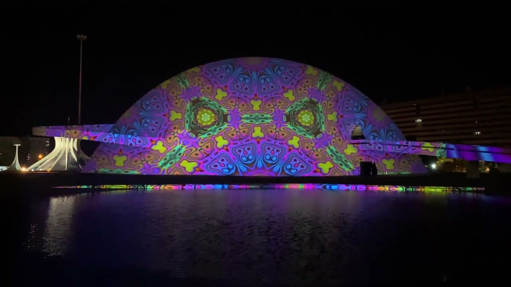
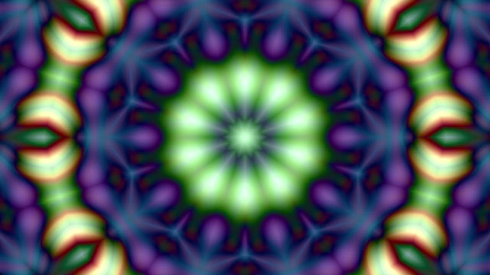

Mandalas
Mandalas
Alexandre RangelEntrevista Portion
Portion interview
Portion video interview with Stina Gustavsson >>
"uma mandala para curar o mundo : cura é autoconhecimento"
Alexandre Rangel, 2020Museu Nacional da República, Brasília
Projeção: JM Eventos
"a mandala to heal the world: healing is self-knowledge"
Alexandre Rangel, 2020National Museum of the Republic, Brasília
Projection: JM Eventos
